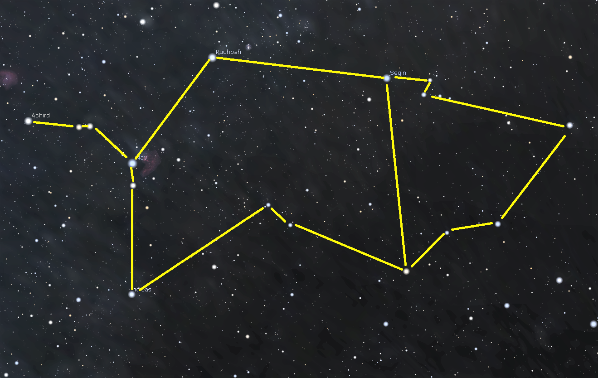

Extend Yourself
Create a Constellation
You have explored the 88 constellations used by astronomers today. But using Stellarium, anyone can trace out their own unique constellations in the sky.
- Turn off all constellation labels, artwork, lines, and borders.
- Pick a starry area in Stellarium and take a screenshot. You will use stars in this area to "connect the dots" and make a new constellation.
- Make sure at least two stars have their name labels showing in the screenshot. This makes it easier to find that area of the sky again using the Search tool.
- If you plan to print your screenshot, go to the Tools tab in the Configuration window and check the "Invert colors" box under Screenshots. This will use less printer ink.
- Open the image in a photo-editing software program, or print out the screenshot to draw on it directly.
- What will your constellation represent? An animal? A person? An object?
- Does your constellation have its own background story?
- After drawing your constellation outline, go back to Stellarium and find the names of all of the stars you used. Add these names to your image.